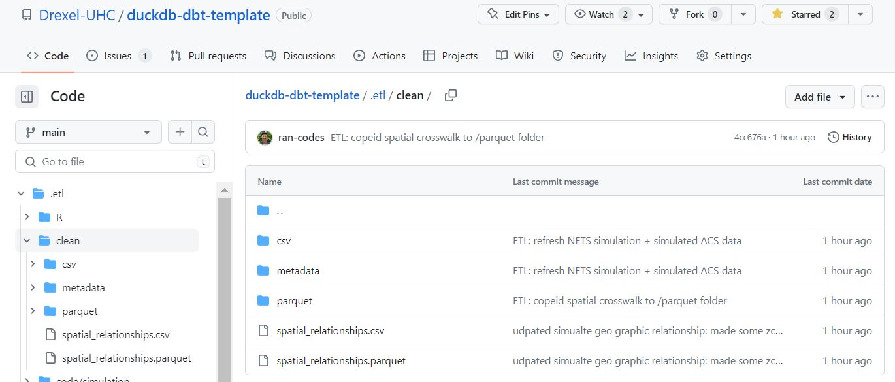
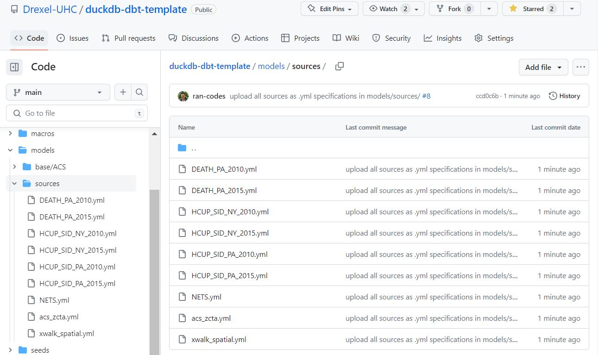
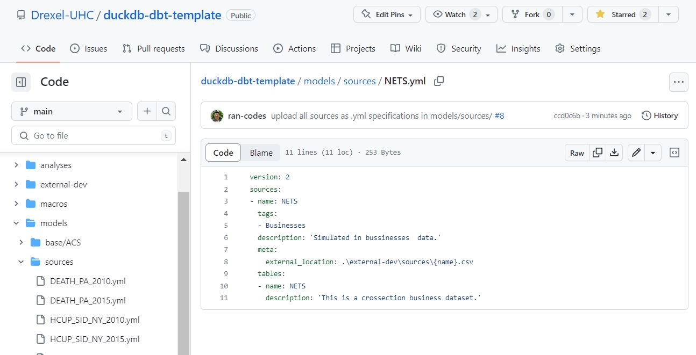
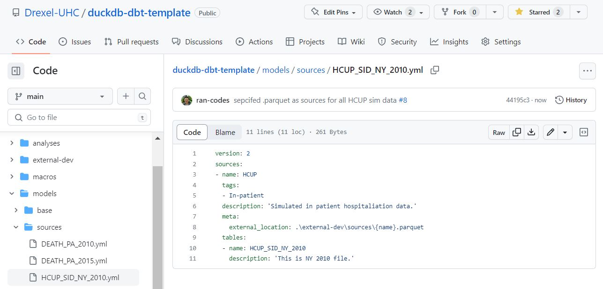
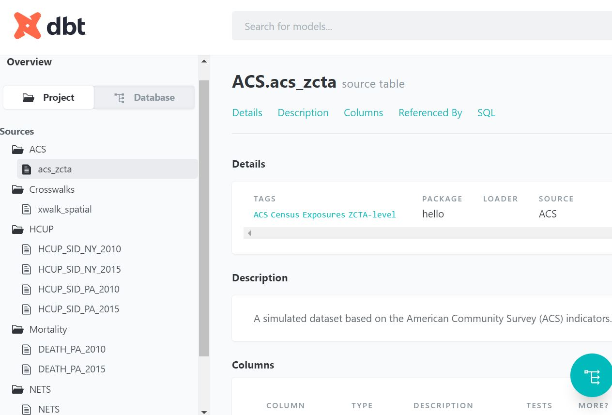

2. Load data
Now that we have set up DBT. We can start loading in our data to do data modeling.
This course does not teach data cleaning so we have simulated some cleaned data which we will load. Also DBT is a highly flexible system that allows us to work either locally or on the cloud. Today’s course will work locally so we can focus on data loading and basics of DBT; working on the cloud will be a topic for the next session.
- Examine source data
- Load source data into DBT
- Learn how to generate documentation
- Create base models
- Document base models
- Deploy documentation
1.1 Examine our data sources
We have simulated some fake data that align with some of the data that is commonly used at the UHC. The code for simulating this can be found in the .etl folder of the repository. The outputs can be found in the .etl/clean/ folder. There are several formats available, lets examine the .CSV formats just because they are more accessible.
Our ETL pipeline has produced a few tables for us to start modeling with. These include:
- xwalk_spatial: simulated zcta, county, city relationship file for two fictional states PA/NY
- DEATH_PA_YYYY: simulate line level mortality data for the state of PA
- HCUP_SID_STATE_YYYY: simulated in patient hospital records for PA/NY
- NETS: simulated business data for PA/NY
- acs_zcta: simulated zcta level indicators
Our ETL pipeline has produced a few tables in several formats (.csv and .parquet).
You can think of .parquet as the next generation of .csv; where it is quickly becoming the gold standard data storage format within the data science world. It has several benefits including storage of metadata (descriptions, column-types), columnar-storage for efficient storage and queries and is highly inter operable with modern analytics workflows.

DuckDB-DBT can read or write in a variety of formats including .csv, .parquet or .json. So the next step is to just copy our source tables into our DuckDB project.
1.2 Load Data Sources into DBT
To load data all we do is copy and paste our files (.csv or .parquet) into a folder and tell DBT where to look. This could be locally on your computer, on the UHC server, or on a cloud storage (S3 bucket) or in a database. We have found a lot of success in using the UHC server as its free and works well across multiple people collaborating; but today we will just focus on working locally to focus on basics of DBT. We will touch on working in the cloud in a future session.
So to work locally we
created a folder
./external-dev/sources/where we can upload our source tables.copy our source tables from our ETL pipeline. So it should look like this.
That’s it! Now we can move on to telling DBT about these source tables!
1.3 Tell DBT about our source tables
In DBT the most important folder is ./models. The DBT (Data Build Tool) ./models folder is like a recipe book for your data: it contains instructions on how to combine and transform raw ingredients (your raw data) into finished dishes (more useful, organized, and analyzed data). Think of each file within the folder as a different recipe, each defining a specific way to cook your data.
Lets add a group of recipes that tell DBT about our starting ingredients. We do this by making a folder ./models/sources. then creating a file in .yml format that tells DBT about each source.
The source folder now looks like this

An example of an individual source .yml that uses .csv is like this (click here)

An example of an individual source .yml that uses .csv is like this (click here)

1.3 Generate documentation
Documentation within a data warehouse is crucial because it ensures transparency, maintainability, and trustworthiness of your data. It’s like a roadmap, explaining how your data is structured, where it comes from, and how it’s been processed and transformed, which is vital when data professionals need to understand or modify data workflows. DBT’s “work as you go” out-of-the-box documentation is incredibly valuable because it auto-generates this roadmap. As you build and transform your data, DBT automatically creates accompanying documentation, ensuring that no step is undocumented and that the whole process is continually up-to-date and ready for team collaboration or audits.
Before we go any farther lets introduce documentation in DBT and make sure everything looks as expected To generate documentation in DBT you run two commands sequentially. First to generate documentation
dbt docs generateThen to serve the documentation
dbt docs serveThe log after running these two should look like:
(.venv) PS D:\git\duckdb-dbt-template> dbt docs generate
16:17:18 Running with dbt=1.3.2
16:17:19 [WARNING]: Configuration paths exist in your dbt_project.yml file which do not apply to any resources.
There are 1 unused configuration paths:
- models.hello.example
16:17:19 Found 1 model, 0 tests, 0 snapshots, 0 analyses, 292 macros, 0 operations, 0 seed files, 9 sources, 0 exposures, 0 metrics
16:17:19
16:17:19 Concurrency: 1 threads (target='dev-local')
16:17:19
16:17:19 Done.
16:17:19 Building catalog
16:17:19 Catalog written to D:\git\duckdb-dbt-template\target\catalog.json
(.venv) PS D:\git\duckdb-dbt-template> dbt docs serve
16:17:26 Running with dbt=1.3.2
16:17:26 Serving docs at 0.0.0.0:8080
16:17:26 To access from your browser, navigate to: http://localhost:8080
16:17:26
16:17:26
16:17:26 Press Ctrl+C to exit.
127.0.0.1 - - [24/May/2023 12:17:27] "GET / HTTP/1.1" 200 -
127.0.0.1 - - [24/May/2023 12:17:27] "GET /manifest.json?cb=1684945047414 HTTP/1.1" 200 -
127.0.0.1 - - [24/May/2023 12:17:27] "GET /catalog.json?cb=1684945047414 HTTP/1.1" 200 -You should now see the documentation site pop up in your browser and it looks like the following:

Looks about right! we have told DBT that we have of bunch of ingredients/sources and it shows up in the documentation.